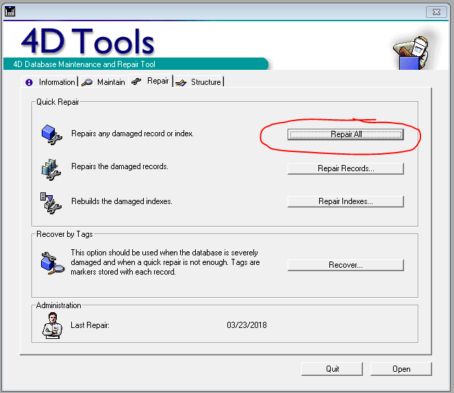

Certain tasks can corrupt data in the database and make you unable to open it. Try
this only if you know the crash happened after a specific data edit, or if the other two
troubleshooting methods were unsuccessful. See Troubleshooting Decision Tree.
Stephanie's desktop computer must be turned on. Use
Stephanie's computer to complete the following tasks.
Click the "SoilTesting4D" folder on the desktop.
Open the "4D Stuff" folder.
Open the "4D Tools 2003.8r2" folder. Make sure to open the normal folder, not
the compressed one.
Select the "4D Tools" application. The file type should be application, not
structure.
Follow the prompt to locate the database on the computer at the following
address: Computer > Local Computer > Local Disc (C:) > Users > schum16 (or your username) > Desktop > SoilTesting4D.
Change the file type in the corner to "Compiled Database (*.4dc)" Click
"Soils" as shown below.
Log in with username "designer" and password "*****".
Select the "Repair" tab and click Repair All next to
"Repairs any damaged record or index." Note: This may take several minutes. When
it's done, close it and try opening the 4D client again. If it doesn't work, try
(these instructions) if you are able to get to the database selection
screen.
Note: This may take several minutes. When it is done, close 4D Tools
and try opening the 4D client again. If possible, Log into the 4D database.
If it still does not work, try the first two methods on Troubleshooting Decision Tree.
Figure: 4D Tools window with 'Repair All' button circled 